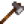
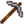
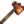
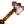
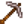
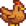
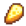

Der Hof
| Der Hof | |
 |
- Für mehr einleitende Informationen, siehe Anfangen.
Nach Abschluss der Charaktererstellung und des anfänglichen Dialogs mit Robin an der Bushaltestelle ist der Hof der Ort, an dem der Spieler das Spiel beginnt. Als Erbe vom Großvater erhalten, nachdem der Spieler seinen Job bei der Joja Gesellschaft hingeschmissen hat, ist es nun seine Pflicht, das Land wiederherzustellen und zu nutzen.
| “ | “Du hast das alte Hofgrundstück deines Großvaters im Sterntautal geerbt. Ausgestattet mit einigen gebrauchten Werkzeugen, und einigen Münzen, beginnst du dein neues Leben.” |
Hoftypen
- Hauptartikel: Hoftypen
Bei der Erstellung eines neuen Charakters kann aus verschiedenen Hoftypen eine Bauernhof-Karte ausgewählt werden. Jede dieser Karten bietet einzigartige Vorteile und begünstigt spezifische Fähigkeiten.
Das Bauernhaus des Spielers wird von außen auf allen Karten gleich aussehen, beginnt aber mit einem einzigartig gestalteten Innenraum gemäß des Hoftypes. Dieses Interieur bietet verschiedene Möbel, Tapeten und Bodenbeläge für jede Karte.
Mit jedem Hoftyp ändert sich, wie die Farm auf der Spielkarte erscheint. Am meisten unterscheidet sich die kultivierbare Fläche, aber auch außerhalb dieser gibt es Unterschiede: - der Wald-Hof verlängert den Wald nach Westen zur Farm und der Flussbett-Hof verbindet sich mit einem Fluss, der südlich der Wüste fließt. Diese Änderungen spiegeln sich nur auf der Weltkarte wieder - es werden keine Änderungen an der tatsächlichen Spielwelt außerhalb des Spielers vorgenommen, die auf der Kartenauswahl basiert.
Nach dem Auswählen eines Hoftypes kann dieser nicht mehr geändert werden, der Spieler ist für diesen Spielstand an diesen Kartentyp gebunden. Jede Karte nimmt den gleichen Bereich ein, aber es gibt verschiedene Mengen von nutzbarem, kultivierbarem und bebaubarem Land.
| Name | Bemerkungen | Entsprechende Fähigkeit |
|---|---|---|
|
||
|
||
|
||
|
||
|
||
|
Bauernhaus
.png)
- Hauptartikel: Bauernhaus
Das Bauernhaus ist die einzige Behausung des Spielers. Standardmäßig findet sich im Haus ein Fernseher, ein Einzelbett, ein Bild, Tisch und Stuhl, dekoratives Geschirr und ein Kamin. Das Bauernhaus kann dreimal bei Robin erweitert werden, einmal für  10.000 G und 450 Holz, noch einmal für
10.000 G und 450 Holz, noch einmal für  65.000 G und 100 Hartholz und ein letztes Mal für
65.000 G und 100 Hartholz und ein letztes Mal für  100.000 G. Bei dieser letzten Erweiterung ist ein Keller mitinbegriffen, in welchem man Reifefässer zur Veredelung von Käse und Wein aufstellen kann. Alle Erweiterungen benötigen in etwa zwei Tage, bis diese fertiggestellt sind.
100.000 G. Bei dieser letzten Erweiterung ist ein Keller mitinbegriffen, in welchem man Reifefässer zur Veredelung von Käse und Wein aufstellen kann. Alle Erweiterungen benötigen in etwa zwei Tage, bis diese fertiggestellt sind.
Ehe
- Hauptartikel: Ehe
Nach Abschluss der Hochzeitszeremonie wird die Person, die Sie geheiratet haben, in das rechte obere Zimmer Ihres Hauses einziehen. Dies erfordert jedoch mindestens ein Bauernhaus mit zweiter Ausbaustufe.
Versandkiste
- Hauptartikel: Versand
Auf der rechten Seite des Bauernhauses befindet sich die rechteckige, hölzerne Versandkiste. Gegenstände mit Wert können darin platziert werden, Werkzeuge ausgenommen. Die Gegenstände werden über Nacht verkauft, und zwar mit dem Wert, welcher während der Schlafenszeit angezeigt wird. Den Gegenstand, den man zuletzt in die Kiste platziert hat, kann man wieder zurückholen. Werden weitere Gegenstände darin platziert, ist es nicht mehr möglich, die vorherigen wieder herauszunehmen. Das bedeutet, dass wenn der Spieler 10 Maiskolben in der Kiste platziert, er diese spätestens vor Ablauf des Tages wieder herausnehmen kann. Legt dieser jedoch noch eine Aubergine oben drauf, kann er nur diese wieder herausnehmen, die Maiskolben jedoch werden endgültig verkauft.
Briefkasten
- Hauptartikel: Briefe
Der Briefkasten befindet sich in der unteren rechten Ecke des Bauernhauses. Er wird zum Empfangen und Lesen von Briefen genutzt. Befindet sich ungelesene Post im Briefkasten, wird dies mit einem schwebenden Sprechblase mit Umschlagssymbol auf dem Briefkasten angezeigt.
Nutzpflanzen
- Hauptartikel: Nutzpflanzen
Saat für Nutzpflanzen kann im Gemischtwarenladen bei Pierre gekauft werden, die in der Auswahl der jeweiligen Jahreszeit angepasst ist, oder die zum Erledigen der kompletten Bundles im Gemeinschaftszentrum benötigt werden. Die Saat kann nur auf der Farm oder im Gewächshaus angepflanzt werden. Um eine Pflanze wachsen zu lassen, muss der Spieler ein freies 1x1 großes Feld anlegen und mit der Hacke bestellen. Nach der Bestellung kann die Saat gepflanzt und bewässert werden. Alle Pflanzen müssen täglich bewässert werden, damit sie gleichmäßig wachsen. Wenn eine Pflanze komplett ausgewachsen ist, kann sie geerntet werden. Viele Pflanzen wachsen nur einmal und die ursprüngliche Pflanze wird geerntet. Aber bei Pflanzen mit Beeren oder Mais, kann man mehrmals die Früchte der Pflanze ernten. Um die Pflanzen schneller wachsen zu lassen, kann man Dünger verwenden. Jedoch, wenn die entsprechende Jahreszeit der Pflanze vorbei ist, verwelkt und stirbt sie sofort.
Obstbäume
- Hauptartikel: Obstbäume
Saaten für Obstbäume können in Pierres Laden Pierre gekauft und auf der Farm in einem 3x3 Rechteck gepflanzt werden. Alle Obstbäume benötigen etwa 28 Tage bis sie ausgewachsen sind. Sie produzieren, abhängig von der Jahreszeit, eine Frucht pro Tag. Obstbäume produzieren keine Früchte im Winter und sind immun gegen 'Risiken'.
Risiken
Pflanzen können zusätzlich sterben, wenn sie von Krähen über Nacht gefressen, oder zu wenig bewässert werden. Die einzige Möglichkeit die Krähen fernzuhalten besteht darin, Vogelscheuchen aufzustellen. Vogelscheuchen können selbst hergestellt, oder als "Strohmänner" Sammler-Vogelscheuchen gesammelt werden.
Gebäude
- Hauptartikel: Schreinerladen
Gebäude können von Robin im Schreinerladen zu unterschiedlichen Preisen erworben werden. Farmgebäude werden für die Tierhaltung benötigt. Beide Gebäudearten (Stall und Scheune) können ausgebaut werden. Es muss das Grundgebäude vor dem Ausbau gekauft worden sein. Jedes dieser Gebäude kann mehrfach gebaut werden um eine größere Anzahl Tiere zu halten.
Es ist empfehlenswert zuerst ein Silo zu bauen um Heu zu erhalten. Das macht das füttern der Tiere viel einfacher.
Verwilderung
Das Verwildern ist ein natürliches Regenerationselement der Farm. Das Bauen von Zäunen und das Bestellen des Landes ist eine effektive Methode, um das erneute Verwildern der Flächen zu verhindern. Es wird dringend empfohlen, dass der Spieler nicht sämtliche Verwilderung unterbindet, denn wenn man Baumsamen in geschützte Bereiche pflanzt, werden diese dort nicht wachsen.
Bäume
- Hauptartikel: Bäume
Neben den Obstbäumen gibt es 3 Arten von Bäumen, die in der Welt von Stardew Valley, einschließlich deines Hofes, wachsen. Der Pilzbaum hat kann nur im Herbst entstehen, es gibt jeden Tag eine 5% Chance das ein normaler Baum (oder Baumstrumpf) ohne Zapfhahn zu einem Pilzbaum wird. Wenn es einen Baumstrumpf trifft wird dieser nachwachsen jedoch erst im Frühling.
| Baum | Benötigtes Werkzeug | Saat | Lässt fallen |
|---|---|---|---|
| Ahornbaum |  Axt | ||
| Eiche | Axt | ||
| Kiefer | Axt | ||
| Pilzbaum | Axt | ||
| Baumsetzling | Axt | Alle Baumsamen | |
| Fallsaat | Axt Spitzhacke | Alle Baumsamen |
- Bäume lassen Samen erst ab Erreichen von Sammeln Stufe 1 fallen.
- Baum-Setzlinge im ersten Wachstumsstadium lassen beim Fällen nichts fallen
Holz
Unabhängig von Bäumen, bringt die Holzverwilderung drei Typen Holz hervor, zwei davon sind Hartholz.
| Art | Benötigtes Werkzeug | Größe | Ertrag |
|---|---|---|---|
| Holz | Axt | 1x1 | 1 |
| Großer Baumstumpf |  Kupfer-Axt | 2x2 | 2 |
| Großer Baumstamm |  Stahl-Axt | 3x3 | 8 |
Stein
- Hauptartikel: Stein
Die Steinverwilderung ist nicht der primäre Weg der Steingewinnung. (vergl. Minen). Die Steinverwilderung unterscheidet zwei Typen abbaubarer Steine.
| Art | Benötigtes Werkzeug | Größe | Ertrag |
|---|---|---|---|
| Stein | Spitzhacke | 1x1 | 1 |
| Fels |  Stahl-Spitzhacke | 2x2 | 10-15 |
Besondere Bereiche
Es gibt drei besondere Bereiche auf dem Hof (Die vom Spieler plazierbaren Gebäude, z.B die Ställe, etc, sind nicht miteinbezogen).
Gewächshaus
- Hauptartikel: Gewächshaus
Das Gewächshaus ist zu Beginn nicht benutzbar, und somit kann der Spieler annehmen, dass es bei einem Sturm zerstört wurde. Die Vervollständigung der Speisekammer im Gemeinschaftszentrum wird das Gewächshaus wieder aufbauen, sodass der Spieler es wieder benutzen kann. Es beinhaltet ein 12x10 Grundstück für Nutzpflanzen und einen Wassertrog um die Gießkanne aufzufüllen. Jeder Samen kann zu jeder Jahreszeit, sogar im Winter, dort angepflanzt werden, welches dem Spieler einen großen Vorteil bietet. Gebäude können nicht im Gewächshaus platziert werden.
Die Höhle
- Hauptartikel: Die Höhle
Nachdem die Einnahmen des Spielers 25000g erreichen, wird Demetrius vor der Tür auf euch warten. Er sagt, dass er an einer Untersuchung arbeitet und fragt ob es den Spieler stören würde wenn er dafür die Höhle verwenden würde. Der Spieler darf wählen, ob Fledermäuse (die in der Höhle Früchte liegen lassen werden) oder Pilze angebaut werden. Diese Wahl ist dauerhaft und kann nicht rückgängig gemacht werden. Werden die Fledermäuse gewählt, wird zufällig eine von vier Früchten in der Höhle platziert, während die Entscheidung für die Pilze sorgt, dass fünf verschiedene Pilzarten in der Höhle wachsen.
Großvaters Schrein
- Siehe auch: Opa
| “ | “Warte auf meine Rückkehr im Morgengrauen des 3. Jahres” |
Großvaters Schrein ist ein kleiner Bereich, der in der nordwestlichen Ecke des Hofes liegt. Beim ersten Besuch wird eine Notiz dort liegen, worin steht: "(Name des Spielers) - Warte auf meine Rückkehr zu Beginn deines dritten Jahres. - Großvater". An der Morgendämmerung des 3. Jahres taucht der Geist des Großvaters auf und beurteilt eure Leistung.
Zusätzliche Informationen
-  Siehe: Tiere
-  Siehe: Handwerkswaren
Verlauf
- 1.0: Eingeführt.
- 1.1: Vier neue Hoftypen hinzugefügt, die während der Charaktererstellung ausgewählt werden können. Jede bevorzugt eine andere Fähigkeit.
| Gebiete | |
|---|---|
| Gebiete | Berge • Bushaltestelle • Calico-Wüste • Eisenbahn • Friedhof • Geheime Wälder • Gipfel • Hexensumpf • Hof • Hofteich • Höhle • Ingwerinsel • Kanalisation • Loren • Minen • Mutantenkäferhöhle • Pelikan Stadt • Schädelhöhle • Steinbruch • Steinbruchmine • Strand • Tunnel • Vulkan-Dungeon • Wäldchen • Zundersaftwald |